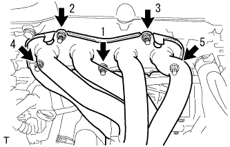
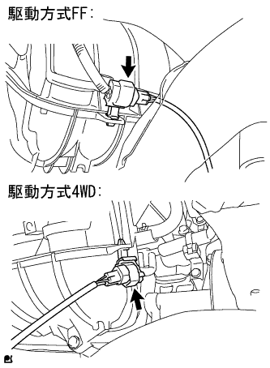

Exhaust Manifold (2AZ-FE) Installation |
| 1. Install Exhaust Manifold Converter Sub-assembly |
Install a new exhaust manifold to head gasket to the cylinder head.
Temporarily install the exhaust manifold converter to the cylinder head with the 5 nuts.
 |
Fully tighten the nuts in the order shown in the illustration.
| 2. Install Manifold Stay NO.2 |
 |
Install manifold stay No.2 with the bolt and nut.
| 3. Install Manifold Stay |
 |
Install the manifold stay with the bolt and nut.
| 4. Air Fuel Ratio Sensor Installation |
 |
Using SST, install the air fuel ratio sensor to the exhaust manifold.
 |
Install the air fuel ratio sensor connector.
| 5. Install Exhaust Manifold Heat Insulator NO.1 |
 |
Install the exhaust manifold heat insulator No.1 with 4 bolts.
| 6. Install Oil Level Gauge Guide |
 |
Install a new O-ring to the oil level gauge guide.
Apply engine oil to the O-ring and install the oil level gauge guide with the bolt.
| 7. Install Oil Level Gauge Sub-assembly |
Install the oil level gauge.
| 8. Install Exhaust Pipe Assembly Front |
 |
Compression Spring Inspection
Using a vernier caliper, measure the free length of the compression spring.
 |
Gasket Installation
Insert a new gasket into the exhaust manifold converter as far as it goes by hand.
Using a wooden block and hammer, gradually tap in the gasket until it is flush with the exhaust manifold.
Install a new gasket to the exhaust pipe FR.
 |
Connect the exhaust pipe FR with the 2 bolts and 2 compression springs.
 |
Install the exhaust pipe assembly FR with the 2 bolts.
 |
Connect the oxygen sensor connector.
| 9. Install Alternator Assembly |
 |
Check that the crankshaft position sensor wire harness is securely fitted into the wire harness clamp bracket and passes behind the rib of the timing chain cover.
 |
Install the Alternator with the 2 bolts.
 |
Install the harness clamp.
Install the clamp bracket with the bolt.
Connect the harness to the +B terminal with the nut.
Install the terminal cap.
Connect the connector.
| 10. Install Fan & Alternator V Belt |
 |
Using SST, slowly turn the V-belt tensioner clockwise and install the V-belt.
 |
Check that the belt is fitted on each pulley.
 |
Check that the belt is correctly set on each pulley.
Start the engine and check that the belt rotates smoothly with no abnormal noise.
| 11. Install Radiator Upper Air Deflector |
Install the radiator upper air deflector with the 8 clips.
| 12. Remove Engine Under Cover NO.1 |
Install the engine under cover No.1 with the 6 bolts and 7 clips.
| 13. Install Engine Under Cover Rear RH |
Install the engine under cover rear RH with the 5 clips.
| 14. Install Front Tire RH |
| 15. Inspect for Exhaust Gas Leaks |
Check that there are no exhaust gas leaks from the locations shown in the illustration (exhaust pipe joints and each sensor installation area).